ระบบควบคุมคลังอะไหล่แพทย์
ศูนย์เครื่องมือแพทย์ โรงพยาบาลนครพิงค์ — ระบบบริหารคลังอะไหล่ & แจ้งเตือน (SMM 07-1:2024)
คู่มือนี้อธิบายขั้นตอนการใช้งานระบบควบคุมคลังอะไหล่เครื่องมือแพทย์ทั้ง 10 โมดูล ตั้งแต่การเข้าสู่ระบบ จนถึงการตั้งค่าเชื่อมต่อคลาวด์และ LINE โดยมีภาพประกอบจริงจากหน้าจอระบบในแต่ละขั้นตอน
การเข้าสู่ระบบ
เปิดเว็บเบราว์เซอร์แล้วเข้าสู่ที่อยู่ของระบบ จากนั้นกรอกรหัสผ่านเพื่อยืนยันตัวตน ระบบรองรับ 3 ระดับสิทธิ์ (Admin / Stock Manager / General User)
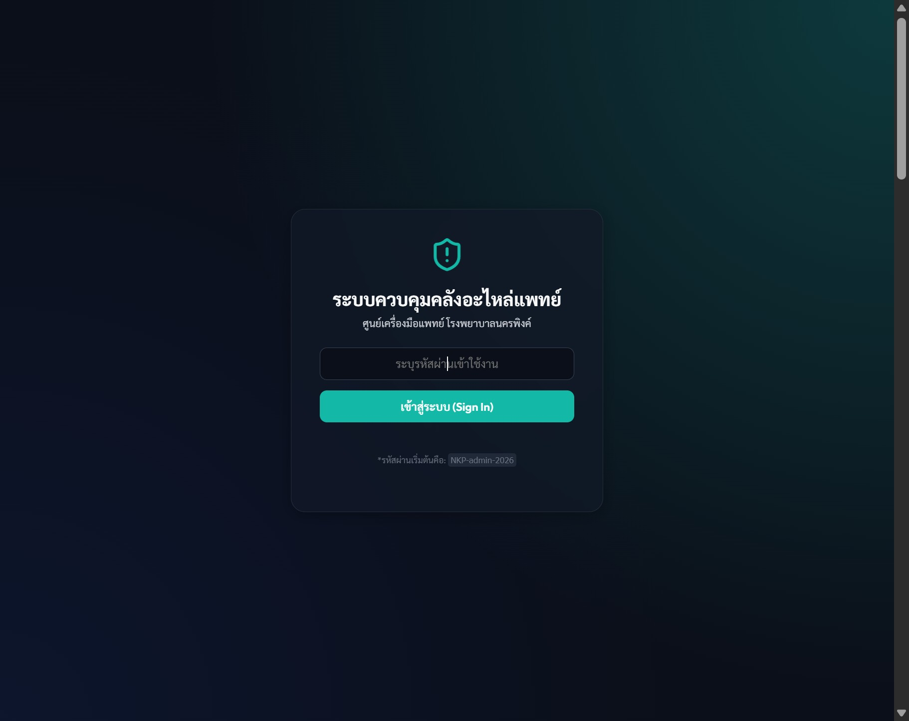
- เปิดเบราว์เซอร์ไปที่
https://surasak4974buem.github.io/V3/ - คลิกที่ช่อง “ระบุรหัสผ่านเข้าใช้งาน” แล้วกรอกรหัสผ่าน (รหัสเริ่มต้นคือ
NKP-admin-2026) - กดปุ่ม “เข้าสู่ระบบ (Sign In)”
- เมื่อเข้าสำเร็จจะมีหน้าต่าง “เข้าสู่ระบบสำเร็จ” ขึ้นมา ให้กด “รับทราบ (Acknowledge)” เพื่อเริ่มใช้งาน
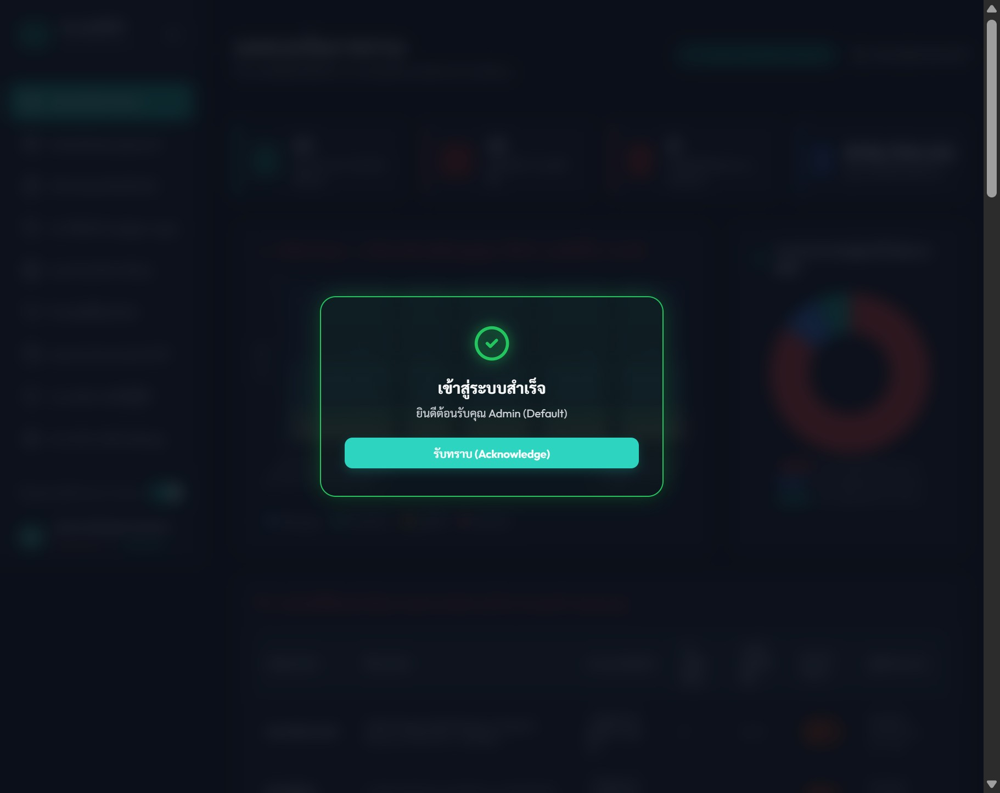
แดชบอร์ดภาพรวม
หน้าแรกหลังเข้าสู่ระบบ แสดงภาพรวมสถานะคลังแบบเรียลไทม์ ทั้งจำนวนรายการ ความเสี่ยงสต็อกต่ำ มูลค่าคลังรวม และกราฟวิเคราะห์
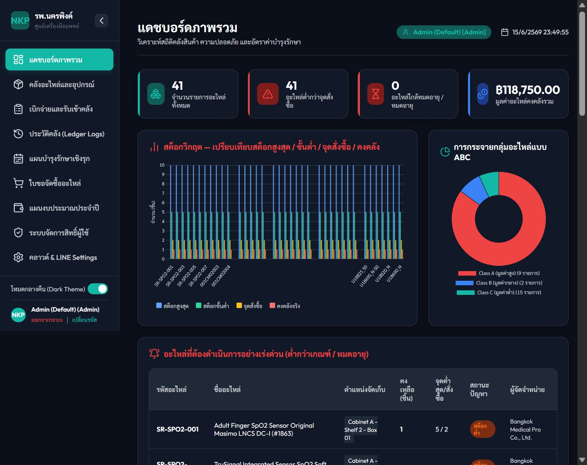
การ์ดสรุปสถานะ
จำนวนรายการทั้งหมด, อะไหล่ต่ำกว่าจุดสั่งซื้อ, ใกล้หมดอายุ และมูลค่าคลังรวม
กราฟสต็อกวิกฤต
เปรียบเทียบสต็อกสูงสุด / ขั้นต่ำ / จุดสั่งซื้อ / คงคลังจริง รายอะไหล่
การกระจาย ABC
สัดส่วนอะไหล่กลุ่ม A (มูลค่าสูง) / B / C ตามหลัก ABC Analysis
ตารางเร่งด่วน
รายการอะไหล่ที่ต้องดำเนินการ (ต่ำกว่าเกณฑ์ / หมดอายุ) พร้อมผู้จัดจำหน่าย
- ชี้ที่แท่งกราฟ เพื่อดูรายละเอียดอะไหล่แต่ละรายการ (สต็อกสูงสุด/ขั้นต่ำ/จุดสั่งซื้อ/คงคลังจริง)
- ใช้ปุ่ม ย่อ/ขยายเมนู (<) มุมบนซ้าย เพื่อขยายพื้นที่แสดงผล
- สลับ โหมดกลางคืน (Dark Theme) ได้จากสวิตช์มุมล่างซ้ายของเมนู
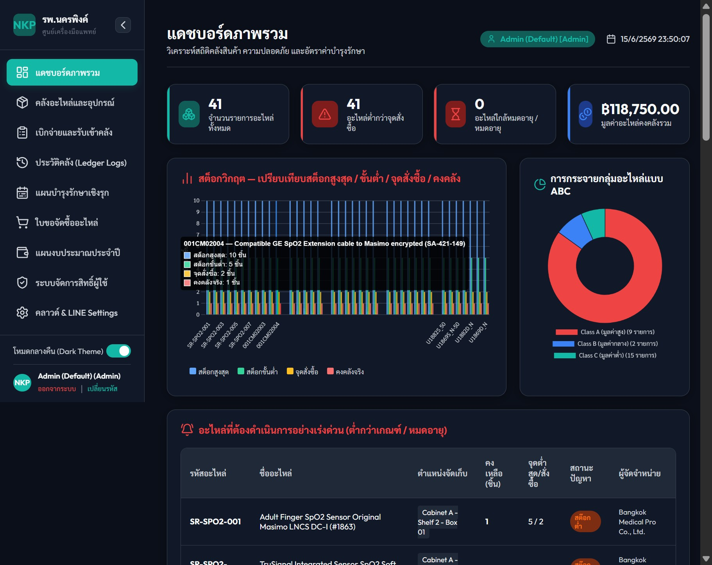
คลังอะไหล่และอุปกรณ์
ทะเบียนอะไหล่หลัก (Master Catalog) แสดงรายการทั้งหมดพร้อมรหัส ชื่อ แบรนด์/ผู้ผลิต ระดับ ABC ตำแหน่งจัดเก็บ คงคลัง ราคา และวันหมดอายุ
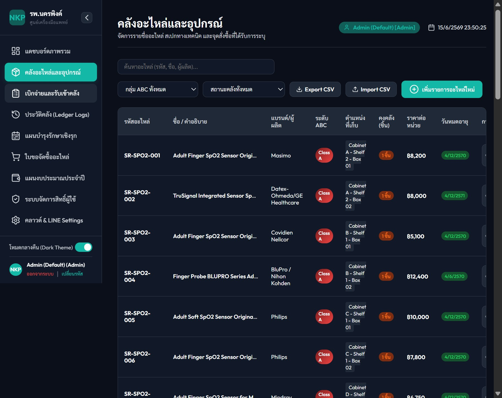
- ค้นหา อะไหล่ด้วยรหัส ชื่อ หรือผู้ผลิต ในช่องค้นหาด้านบน
- กรอง ตามกลุ่ม ABC หรือสถานะคลัง (ปกติ / ต่ำ / หมด) จาก dropdown
- กด “เพิ่มรายการอะไหล่ใหม่” เพื่อเพิ่มอะไหล่ พร้อมกำหนดสต็อกขั้นต่ำ จุดสั่งซื้อ และวันหมดอายุ
- ใช้ Export CSV / Import CSV เพื่อนำข้อมูลออก/เข้าเป็นชุด
เบิกจ่ายและรับเข้าคลัง
บันทึกการเคลื่อนไหวของอะไหล่ทุกประเภท ระบบบังคับกรอกซีเรียลเครื่องมือแพทย์และเลขใบแจ้งซ่อมเพื่อให้ตรวจสอบย้อนกลับได้ครบถ้วน
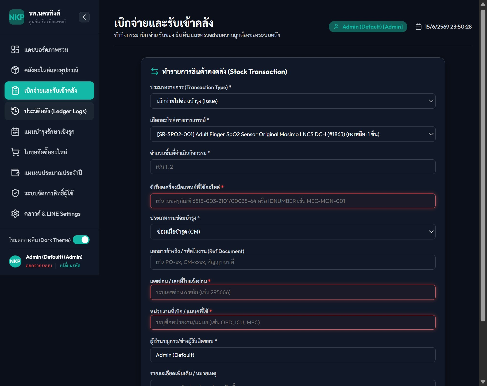
- เลือก ประเภทรายการ: เบิกจ่ายไปซ่อมบำรุง (Issue) / รับเข้าคลัง (Receive) / ยืม-คืน
- เลือก อะไหล่ทางการแพทย์ จากรายการ (แสดงจำนวนคงเหลือกำกับ)
- กรอก จำนวน, ซีเรียลเครื่องมือแพทย์ (เช่น
MEC-MON-001) และ ประเภทงานซ่อม (CM/PM) - ระบุ เลขใบแจ้งซ่อม (6 หลัก) และ หน่วยงานที่เบิก (เช่น OPD, ICU, MEC)
- กดบันทึก — ระบบจะตัด/เพิ่มสต็อกและส่งแจ้งเตือน LINE ตามสถานะคงคลัง
ประวัติคลัง (Ledger Logs)
สมุดบัญชีคลัง (Ledger) บันทึกทุกธุรกรรมพร้อมวันเวลา ประเภท อะไหล่ จำนวน เลขเครื่อง/งาน ผู้ปฏิบัติงาน และสถานะการยืม
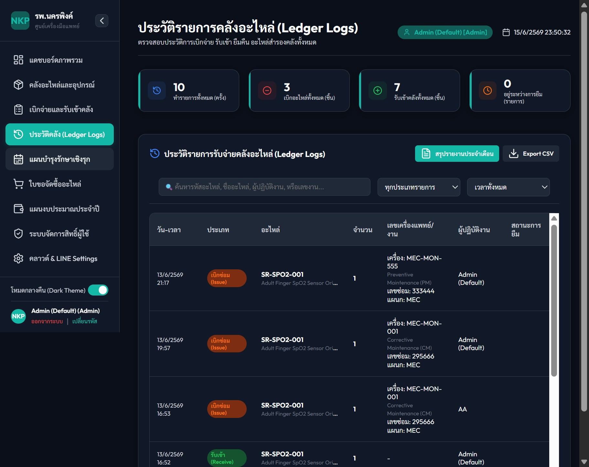
- ค้นหา ด้วยรหัสอะไหล่ ชื่ออะไหล่ ผู้ปฏิบัติงาน หรือเลขงาน
- กรอง ตามประเภทรายการ และช่วงเวลา (รายวัน/สัปดาห์/เดือน/ปีงบ)
- กด “สรุปรายงานประจำเดือน” เพื่อสร้างรายงานการใช้อะไหล่รายเดือน
- กด Export CSV เพื่อนำประวัติออกเป็นไฟล์
แผนบำรุงรักษาเชิงรุก (PM)
วางแผนบำรุงรักษาเชิงป้องกัน (Preventive Maintenance) พร้อมระบุอะไหล่ที่ต้องใช้ในแต่ละแผน และระบบคาดการณ์การเติมอะไหล่ล่วงหน้า
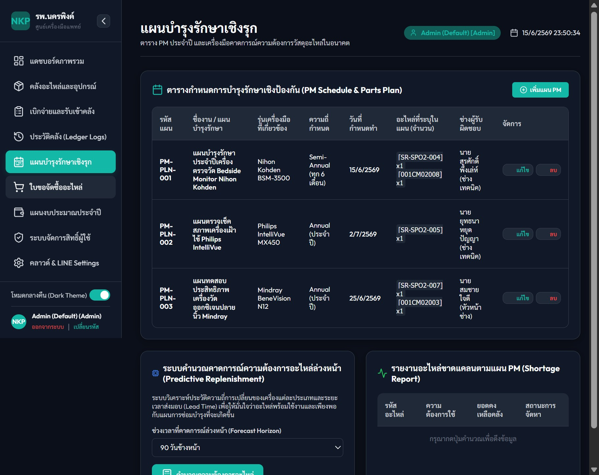
- กด “เพิ่มแผน PM” เพื่อสร้างแผนใหม่ พร้อมระบุรุ่นเครื่อง ความถี่ และอะไหล่ที่ต้องใช้
- ดู วันกำหนดทำ และช่างผู้รับผิดชอบในตาราง
- เลือก ช่วงเวลาคาดการณ์ล่วงหน้า (เช่น 90 วัน) แล้วกดคำนวณ เพื่อดูความต้องการอะไหล่ล่วงหน้า
- ตรวจ รายงานอะไหล่ขาดแคลนตามแผน PM (Shortage Report) เพื่อเตรียมจัดซื้อ
ใบขอจัดซื้ออะไหล่
ระบบแจ้งเตือนและวิเคราะห์จุดสั่งซื้อ (Reorder Point Monitor) แสดงอะไหล่ที่คงคลังถึง/ต่ำกว่าจุดสั่งซื้อ พร้อมประมาณการมูลค่าและปุ่มส่งเข้าข้อความ LINE
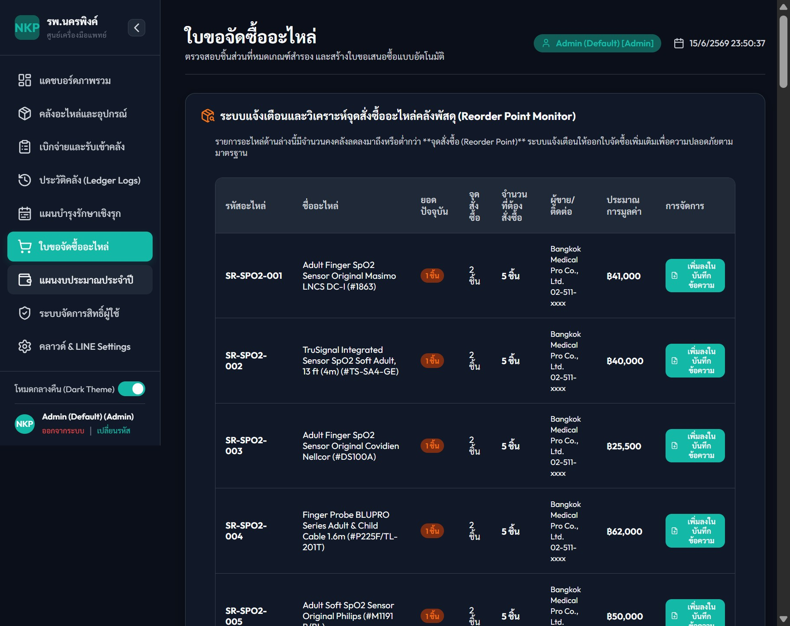
- ตรวจรายการอะไหล่ที่ คงคลังถึง/ต่ำกว่าจุดสั่งซื้อ (ไฮไลต์สถานะ)
- ดู จำนวนที่ต้องสั่งซื้อ และ ประมาณการมูลค่า ที่ระบบคำนวณให้
- กด “เพิ่มลงในบันทึกข้อความ” เพื่อรวมเข้าบันทึกข้อความขอจัดซื้อ
- นำรายการไปออก บันทึกข้อความ/ใบขอซื้อ เพื่อพิมพ์เสนอผู้บริหาร
แผนงบประมาณประจำปี
แดชบอร์ดงบประมาณรายปี เลือกดูตามปีงบประมาณได้ แสดงวงเงินรวม ยอดใช้ไป คงเหลือ ความคืบหน้ารายโครงการ และกราฟเปรียบเทียบงบ vs ใช้ไป
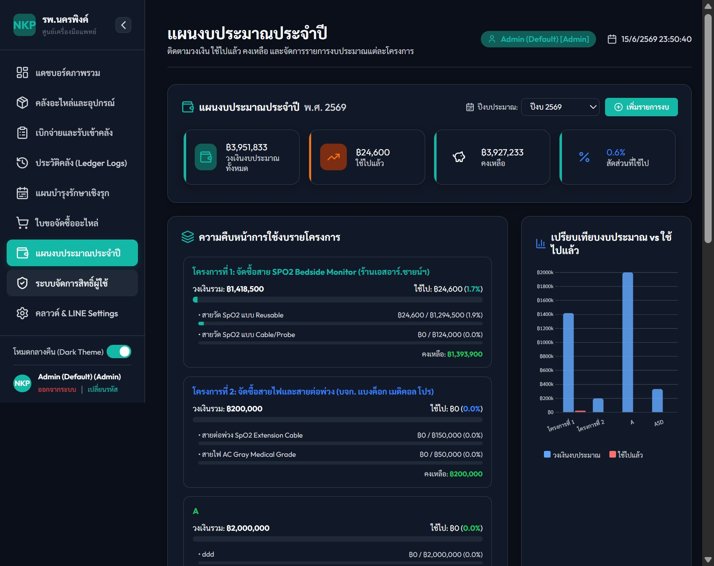
- เลือก ปีงบประมาณ จาก dropdown มุมขวาบน (หรือ “ทุกปีงบประมาณ” เพื่อดูรวม)
- ดู การ์ดสรุป: วงเงินงบประมาณทั้งหมด, ใช้ไปแล้ว, คงเหลือ และสัดส่วน %
- ติดตาม ความคืบหน้ารายโครงการ ผ่าน progress bar รวมและแยกรายหมวด
- กด “เพิ่มรายการงบ” (เฉพาะ Admin) เพื่อเพิ่ม/แก้ไขวงเงินแต่ละโครงการ
ระบบจัดการสิทธิ์ผู้ใช้
สร้างและบริหารบัญชีผู้ใช้ พร้อมกำหนดระดับสิทธิ์ 3 ระดับ และดูจำนวนครั้งการเข้าใช้ระบบของแต่ละบัญชี
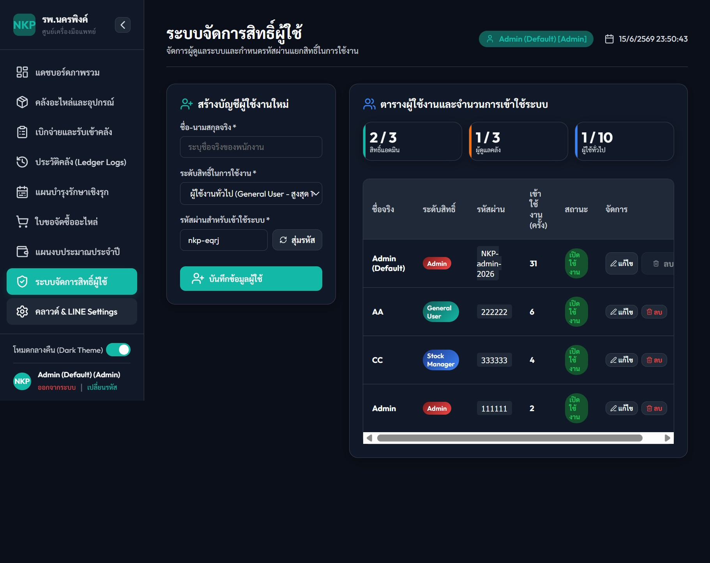
| ระดับสิทธิ์ | สิ่งที่ทำได้ | โควต้า |
|---|---|---|
| Admin | จัดการได้ทุกโมดูล รวมงบประมาณ ผู้ใช้ และการตั้งค่าคลาวด์/LINE | สูงสุด 3 |
| Stock Manager | จัดการคลัง เบิกจ่าย PM ได้เต็ม — ดูงบประมาณได้อย่างเดียว | สูงสุด 3 |
| General User | ดูข้อมูลภาพรวมและประวัติ (จำกัดการแก้ไข) | สูงสุด 10 |
- กรอก ชื่อ-นามสกุลจริง และเลือก ระดับสิทธิ์การใช้งาน
- กำหนด รหัสผ่าน เอง หรือกด “สุ่มรหัส”
- กด “บันทึกข้อมูลผู้ใช้” — บัญชีใหม่จะปรากฏในตารางด้านขวา
- ใช้ปุ่ม แก้ไข / ลบ และสลับ สถานะเปิด-ปิดใช้งาน รายบัญชีได้
คลาวด์ & LINE Settings
เชื่อมต่อระบบกับ Google Sheets เพื่อสำรอง/ซิงก์ข้อมูลบนคลาวด์ และตั้งค่า LINE OA เพื่อรับการแจ้งเตือนอัตโนมัติ (เฉพาะสิทธิ์ Admin)
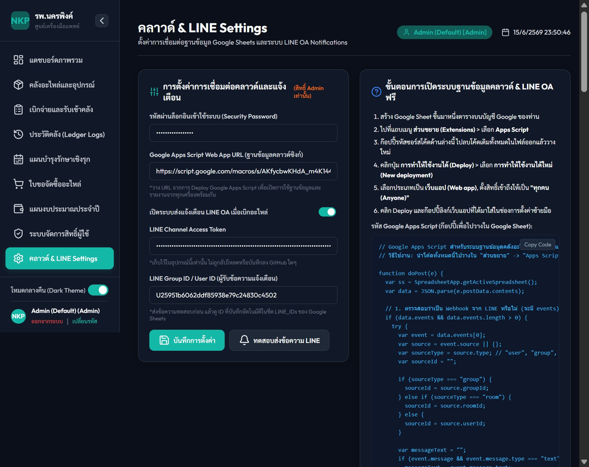
- วาง Google Apps Script Web App URL (ฐานข้อมูลคลาวด์ซิงก์)
- เปิดสวิตช์ “ส่งแจ้งเตือน LINE OA เมื่อแตะนีออน” และวาง LINE Channel Access Token + LINE Group/User ID
- กด “บันทึกการตั้งค่า” แล้วกด “ทดสอบส่งข้อความ LINE” เพื่อตรวจสอบการเชื่อมต่อ
- ทำตาม ขั้นตอนติดตั้ง ด้านขวา: สร้าง Google Sheet → วางโค้ด Apps Script (ปุ่ม Copy Code) → Deploy เป็น Web App (สิทธิ์ “ทุกคน/Anyone”)